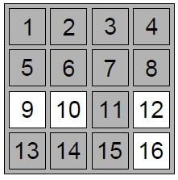

一行两个正整数n、k。
一些探险家组队去探索神秘的Nescafe之塔。经过一番周折，探险队员们终于突破了塔门，来到了Nescafe之塔的一层大殿。而探险队员们想要拜访的四大护法和塔之圣主据传都住在塔的高层，因此他们迅速奔向了大殿一侧的升降梯口。不过由于Nescafe之塔乃是一年一度封印和开启“Nescafe之杯”的禁地，自然不能允许外来人员随意闯入，因此要想乘坐升降梯，队员们必须破解开启升降梯动力的密码。
升降梯的密码盘是一个由n*n个方格组成的正方形(n为偶数)，第i行第j列的方格中标着数字(i-1)*n+j，而在密码盘的上面覆盖着一张同样由n*n个方格组成的挡光片。如果挖去挡光片上的n*n/4个格子，并从小到大记下通过挖去的格子看到的n*n/4个数；然后把挡光片顺时针旋转90°、180°、270°，每次也同样记下看到的n*n/4个数；这样最终将得到n*n个数。如果记下的这n*n个数恰好是1~n*n的一个排列，那么我们称这片挖去n*n/4个格子后的挡光片对密码盘是“精确覆盖”的。不妨用一个n*n的01矩阵表示这张挡光片，其中挖去的格子为1，没有挖去的格子为0，那么如下图所示的挡光片就可以表示为：

0000
0000
1101
0001
定义挡光片A比挡光片B小，当且仅当A对应的01矩阵的字典序小于B对应的01矩阵的字典序（即：A和B对应的01矩阵中存在一个位置(x,y)，使得矩阵A、B中前x-1行的所有数字和第x行的前y-1个数字都相同，而A中第x行第y列的数字为0，B中第x行第y列的数字为1）。
现在升降梯口的墙上写着一个数字k，探险队员们必须迅速制作出第k小的、对密码盘“精确覆盖”的挡光片，用以在密码盘上获取n*n个数作为开启升降梯动力的密码。
一行两个正整数n、k。
输出满足要求的挡光片对应的01矩阵。
4 15
0000
0000
1101
0001
测试点编号 n k
#1 =2 <=10
#2 =2 <=10^3
#3 =4 <=10
#4 =4 <=10^9
#5 =6 <=10
#6 =6 <=10^18
#7 =8 <=10
#8 =8 <=10^18
#9 =10 <=10^18
#10 =10 <=10^18
数据保证有解。